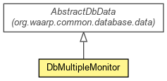

org.waarp.openr66.database.data
Class DbMultipleMonitor
java.lang.Object
 org.waarp.common.database.data.AbstractDbData
org.waarp.openr66.database.data.DbMultipleMonitor
org.waarp.common.database.data.AbstractDbData
org.waarp.openr66.database.data.DbMultipleMonitor
public class DbMultipleMonitor
- extends org.waarp.common.database.data.AbstractDbData

Configuration Table object
- Author:
- Frederic Bregier
| Nested classes/interfaces inherited from class org.waarp.common.database.data.AbstractDbData |
org.waarp.common.database.data.AbstractDbData.UpdatedInfo |
| Fields inherited from class org.waarp.common.database.data.AbstractDbData |
allFields, dbSession, isSaved, otherFields, primaryKey |
| Methods inherited from class org.waarp.common.database.data.AbstractDbData |
get, getTrueValue, getValue, getValues, setTrueValue, setValue, setValues |
dbTypes
public static final int[] dbTypes
table
public static final String table
- See Also:
- Constant Field Values
countConfig
public int countConfig
countHost
public int countHost
countRule
public int countRule
NBPRKEY
public static final int NBPRKEY
- See Also:
- Constant Field Values
selectAllFields
protected static final String selectAllFields
updateAllFields
protected static final String updateAllFields
insertAllValues
protected static final String insertAllValues
- See Also:
- Constant Field Values
DbMultipleMonitor
public DbMultipleMonitor(org.waarp.common.database.DbSession dbSession,
String hostid,
int cc,
int ch,
int cr)
- Parameters:
dbSession - hostid - cc - count for Configch - count for Hostcr - count for Rule
DbMultipleMonitor
public DbMultipleMonitor(org.waarp.common.database.DbSession dbSession,
String hostid)
throws org.waarp.common.database.exception.WaarpDatabaseException
- Parameters:
dbSession - hostid -
- Throws:
org.waarp.common.database.exception.WaarpDatabaseException
initObject
protected void initObject()
- Specified by:
initObject in class org.waarp.common.database.data.AbstractDbData
getSelectAllFields
protected String getSelectAllFields()
- Specified by:
getSelectAllFields in class org.waarp.common.database.data.AbstractDbData
getTable
protected String getTable()
- Specified by:
getTable in class org.waarp.common.database.data.AbstractDbData
getInsertAllValues
protected String getInsertAllValues()
- Specified by:
getInsertAllValues in class org.waarp.common.database.data.AbstractDbData
getUpdateAllFields
protected String getUpdateAllFields()
- Specified by:
getUpdateAllFields in class org.waarp.common.database.data.AbstractDbData
setToArray
protected void setToArray()
- Specified by:
setToArray in class org.waarp.common.database.data.AbstractDbData
setFromArray
protected void setFromArray()
throws org.waarp.common.database.exception.WaarpDatabaseSqlException
- Specified by:
setFromArray in class org.waarp.common.database.data.AbstractDbData
- Throws:
org.waarp.common.database.exception.WaarpDatabaseSqlException
getWherePrimaryKey
protected String getWherePrimaryKey()
- Specified by:
getWherePrimaryKey in class org.waarp.common.database.data.AbstractDbData
setPrimaryKey
protected void setPrimaryKey()
- Specified by:
setPrimaryKey in class org.waarp.common.database.data.AbstractDbData
delete
public void delete()
throws org.waarp.common.database.exception.WaarpDatabaseException
- Overrides:
delete in class org.waarp.common.database.data.AbstractDbData
- Throws:
org.waarp.common.database.exception.WaarpDatabaseException
insert
public void insert()
throws org.waarp.common.database.exception.WaarpDatabaseException
- Overrides:
insert in class org.waarp.common.database.data.AbstractDbData
- Throws:
org.waarp.common.database.exception.WaarpDatabaseException
exist
public boolean exist()
throws org.waarp.common.database.exception.WaarpDatabaseException
- Overrides:
exist in class org.waarp.common.database.data.AbstractDbData
- Throws:
org.waarp.common.database.exception.WaarpDatabaseException
select
public void select()
throws org.waarp.common.database.exception.WaarpDatabaseException
- Overrides:
select in class org.waarp.common.database.data.AbstractDbData
- Throws:
org.waarp.common.database.exception.WaarpDatabaseException
update
public void update()
throws org.waarp.common.database.exception.WaarpDatabaseException
- Overrides:
update in class org.waarp.common.database.data.AbstractDbData
- Throws:
org.waarp.common.database.exception.WaarpDatabaseException
getFromStatement
public static DbMultipleMonitor getFromStatement(org.waarp.common.database.DbPreparedStatement preparedStatement)
throws org.waarp.common.database.exception.WaarpDatabaseNoConnectionException,
org.waarp.common.database.exception.WaarpDatabaseSqlException
- For instance from Commander when getting updated information
- Parameters:
preparedStatement -
- Returns:
- the next updated Configuration
- Throws:
org.waarp.common.database.exception.WaarpDatabaseNoConnectionException
org.waarp.common.database.exception.WaarpDatabaseSqlException
getUpdatedPrepareStament
public static org.waarp.common.database.DbPreparedStatement getUpdatedPrepareStament(org.waarp.common.database.DbSession session)
throws org.waarp.common.database.exception.WaarpDatabaseNoConnectionException,
org.waarp.common.database.exception.WaarpDatabaseSqlException
- Returns:
- the DbPreparedStatement for getting Updated Object in "FOR UPDATE" mode
- Throws:
org.waarp.common.database.exception.WaarpDatabaseNoConnectionException
org.waarp.common.database.exception.WaarpDatabaseSqlException
checkUpdateConfig
public boolean checkUpdateConfig()
- On Commander side
- Returns:
- True if this is the last update
checkUpdateHost
public boolean checkUpdateHost()
- On Commander side
- Returns:
- True if this is the last update
checkUpdateRule
public boolean checkUpdateRule()
- On Commander side
- Returns:
- True if this is the last update
changeUpdatedInfo
public void changeUpdatedInfo(org.waarp.common.database.data.AbstractDbData.UpdatedInfo info)
- Specified by:
changeUpdatedInfo in class org.waarp.common.database.data.AbstractDbData
toString
public String toString()
- return the String representation
- Overrides:
toString in class Object
Copyright © 2009-2012 Waarp. All Rights Reserved.